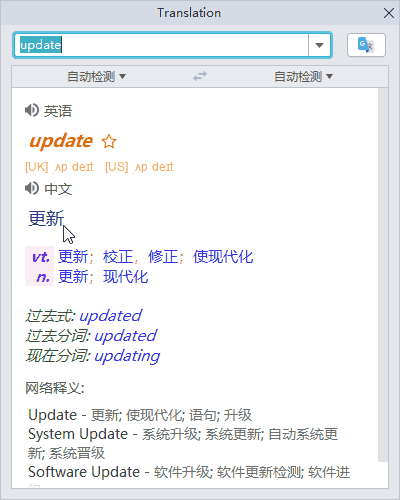
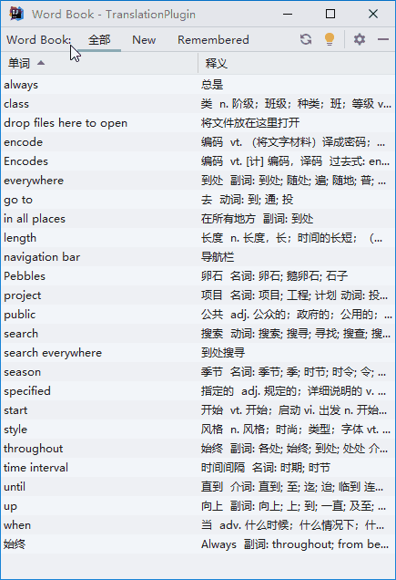
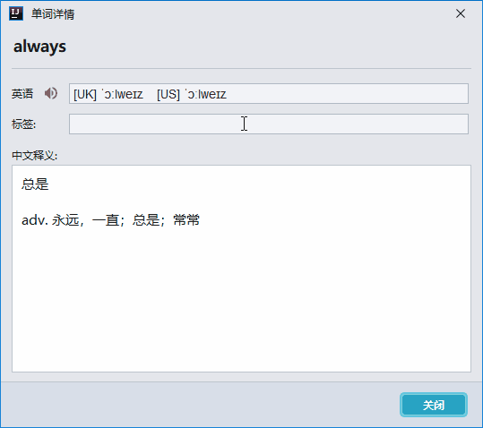

バージョン2.5のリリース ノートへようこそ。このバージョンには多くのアップデートがあります。気に入っていただければ幸いです。主なハイライトは次のとおりです。
- 有道辞書ビュー - 新しい有道辞書ビュー
- 単語帳の単語のラベル - 为単語帳の単語のグループ分けと分類
- 単語帳のインポートとエクスポート - 単語帳の共有を実現
このリリースノートをオンラインで読みたい場合は、こちらをご覧ください。
翻訳
有道辞書ビュー
新しい有道辞書ビューでは、有道翻訳の辞典コンテンツを解析・構造化して表示し、有道翻訳の辞典コンテンツをGoogle 翻訳と同じように分かり易くしてくれます。
単語帳
単語ラベル
一つ一つの単語に一つまたは複数のラベルを付けて、グループ分けと分類を行うことができます。
単語ラベルの編集（コンマを使用して複数のラベルを付与可）：
インポートとエクスポート
単語帳のインポート/エクスポートをサポートしました。単語帳を共有できます。単語は、次の形式にエクスポートできます。
- JSON（単語帳のインポートに使用できます）
- XML（単語帳のインポートに使用できます）
- 有道XML（道教辞典へのインポートに使用できますが、単語帳へのインポートには使用できません）